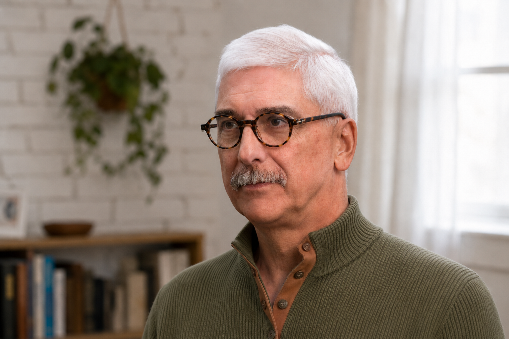

Asociación Psicoanalítica del Uruguay · APU
Luis Bibbó
Médico psiquiatra. Psicoanalista, Miembro Titular de la Asociación Psicoanalítica del Uruguay.

Perfil profesional
Más de cuarenta años de actividad profesional en docencia, clínica, supervisión y trabajo institucional.
Luis Bibbó es médico psiquiatra y psicoanalista. Es Miembro Titular de la Asociación Psicoanalítica del Uruguay e integra los grupos docente, de analistas y de supervisores del Instituto. Recibe consultas clínicas en consultorio privado.
Su actividad profesional se reparte entre la clínica de consultorio y el trabajo en instituciones que asisten a poblaciones en condiciones de vulnerabilidad social. En esta segunda vertiente se inscriben los veinticuatro años de integración al Instituto Nacional de Criminología (INACRI), donde ocupó funciones de dirección; las intervenciones psicoanalíticas realizadas con el Centro de Intercambio Docente de APU en Portal Amarillo, MIDES, INAU, liceos y la Facultad de Psicología; y la supervisión, desde 2021, de prácticas psicoanalíticas realizadas en el marco de FEPAL fuera del entorno tradicional.
Su producción escrita se ocupa de los efectos del lazo social sobre la subjetividad. Los temas recurrentes son el delito y la exclusión, el sufrimiento institucional, las parentalidades, los cambios societarios y, en los trabajos más recientes, la intolerancia y el consumismo.
La comisión que evaluó su pasaje a Miembro Titular destacó la coherencia entre clínica, producción teórica e inserción institucional, y el trabajo sostenido en la zona donde lo individual se cruza con lo social.
Función en APU y FEPAL
Miembro Titular es el grado más alto de membresía de APU, instituto terciario reconocido por el Ministerio de Educación y Cultura del Uruguay.
- APU Asociación Psicoanalítica del Uruguay. Miembro Titular.
- APU · Instituto Integrante del grupo docente, del grupo de analistas y del grupo de supervisores. Ha dictado seminarios como docente titular.
- FEPAL · desde 2021 Supervisor del programa de prácticas psicoanalíticas realizadas fuera del entorno tradicional, dependiente de la Dirección de Comunidad y Cultura, del Consejo Profesional y de la Presidencia de FEPAL.
- Clínica Consultorio privado.
Recorrido formativo
Formación médica, psicoanalítica y sistémica. Inscripción institucional sostenida en APU desde 2006.
- Medicina Médico psiquiatra.
- Psicoanálisis Formación psicoanalítica en la Asociación Psicoanalítica del Uruguay. Miembro asociado desde 2006, posteriormente Miembro Titular.
- 1992 – 1994 Formación en terapia familiar sistémica. Centro de Estudios de la Familia y la Pareja (CEFYP), Buenos Aires.
Cuatro bloques de actividad profesional
Actividad organizada en cuatro bloques temáticos antes que por orden cronológico.
Práctica clínica y formación de analistas
Consultorio de psicoanálisis individual, de pareja y familia. Función de analista de formación. Supervisión clínica. Docencia de seminarios en el Instituto de APU. Integración de comisiones de evaluación de trabajos de asociado en 2015, 2016, 2018 y 2021.
- 2021Seminario titular Supervisión: efecto de la experiencia analítica.
- 2020Seminario titular Formaciones y otras aproximaciones al inconsciente.
- 2019Seminario titular Repetición en la teoría y en la práctica psicoanalítica.
- 2008 – 2010Seminarios adjuntos: Narcisismo y segunda tópica (titular: R. Dosso); Lo dual, lo triangular en la teoría psicológica (titular: E. Gratadoux); Análisis fragmentario de una histeria, Dora (titular: G. Franco).
Cargos de gobierno y dirección académica en APU
Cargos en órganos de gobierno de APU e integración en grupos de estudio y laboratorios temáticos.
- 2015 – 2016Director Científico, Comisión Directiva de APU.
- 2011 – 2012Tesorero, Comisión Directiva de APU.
- 2018 – 2020Integrante de la Comisión de Admisión.
- 2012 – 2014Coordinador del Laboratorio de Pareja y Familia.
- Desde 2006Grupos de estudio internos: Pensamiento de René Kaës, Efectos de los cambios societarios y culturales en la práctica y la reflexión psicoanalítica, Laboratorio de Pareja y Familia.
Trabajo institucional y comunitario
El trabajo institucional cubre más de tres décadas e incluye dos grandes líneas: la actividad en el Instituto Nacional de Criminología y las intervenciones psicoanalíticas grupales realizadas a través del Centro de Intercambio Docente de APU.
Instituto Nacional de Criminología (INACRI): veinticuatro años de integración al organismo, con funciones de dirección. El INACRI fue un organismo estatal con competencia nacional en materia criminológica, integrado por tres centros con equipos multidisciplinarios dedicados a investigación, docencia, peritaje y asesoramiento al poder judicial, y a intervenciones directas en establecimientos carcelarios. La actividad en ese período incluyó trabajos intramuros en cárceles de Montevideo y del interior, experiencias grupales con personas privadas de libertad, diseño de pautas de tratamiento, y producción de trabajos de perfil criminológico interdisciplinario. En 2006 organizó y dirigió el Curso de Introducción a la Criminología, con un cuerpo docente de abogados, psiquiatras, psicólogos y sociólogos, y veinticinco cursantes seleccionados sobre cien aspirantes.
Intervenciones psicoanalíticas a través del Centro de Intercambio Docente de APU. Trabajo grupal e institucional en organismos del Estado, ONGs e instituciones educativas y asistenciales:
- 2018 – 2019Intervención institucional en INAU.
- 2013 – 2014Programa APU – MIDES Jóvenes en Red.
- 2017Curso Intervenciones psicoanalíticas con grupos, dentro de Intervenciones grupales en equipos de salud, Facultad de Psicología (responsable: Prof. A. Muniz).
- 2011 – 2012Intervenciones en MIDES.
- 2006 – 2019Intervenciones en Portal Amarillo (ASSE), dispositivo de tratamiento de adicciones, en distintos años: 2006-2008, 2009, 2019.
Docencia anterior y comunidades terapéuticas
Actividad docente y clínica desarrollada antes del inicio de la formación psicoanalítica en APU.
- 1976 – 2008Docente titular de Enseñanza Secundaria, especialidad Ciencias Biológicas.
- 1986 – 1990Terapeuta del Taller de Técnicas Expresivas y docente en la Comunidad Terapéutica Castalia.
Ejes temáticos de la obra
Temas recurrentes en la producción escrita y en los trabajos presentados.
Delito, exclusión y subjetivación
Los efectos del encierro y de la marginalidad sobre la subjetividad, leídos en el cruce entre psicoanálisis y criminología.
Sufrimiento institucional
La angustia en los equipos técnicos y el trabajo psicoanalítico con instituciones que atienden poblaciones en situación de vulnerabilidad.
Cambios societarios y clínica
Cambios culturales y nuevas condiciones de subjetivación, y su impacto en la clínica psicoanalítica.
Femineidad, género y violencia
Lecturas psicoanalíticas sobre violencia, delincuencia y femineidad, en diálogo con las ciencias sociales y la perspectiva de género.
Parentalidades y vínculos
Paternidad y maternidad en contextos de fragilización del lazo familiar; trabajos sobre pareja, familia y desamparo.
Adicciones, intolerancia y consumismo
Odio, consumo y formas actuales del padecimiento subjetivo.
Libros, capítulos y artículos
Producción seleccionada en orden cronológico inverso.
Libros y capítulos en libros
- 2024 Bibbó, L. & Hernández, S. La escena de la partera. En Terepins & Bracco (orgs.), Prácticas psicoanalíticas en la comunidad (pp. 148-151). Blucher.
- 2019 Bibbó, L. Delincuencia: aporte al conocimiento de lo femenino. En P. Alkolombre & E. Ponce de León (eds.), Violencias y subjetividad: género, infancia y sociedad (pp. 261-268). Letra Viva.
- 2010 Aksler, S., Baeza, G., Barrán, J. P., Bibbó, L., Chabalgoity, A. M., de Mello, E., de Souza, N., López Brizolara, A. L., Porzecanski, T., Suárez Lope, B., Schroeder, D., Tenenbaum, H., Ulriksen de Viñar, M., Villafaña, L. & Viñar, M. N. Psicoanálisis en los inicios del siglo XXI: continuidades y cambios. En Desafíos del psicoanálisis contemporáneo. APU.
- 2008 Bibbó, L. Mutaciones en las condiciones de subjetividades. En Exclusión – Inclusión, vol. 8 (pp. 28-37). APU, Centro de Intercambio.
- 2008 Barreiro, J., Bibbó, L., Delprésttito, N., Miraldi, A., Moreira, W., Silva, B. & López de Caiafa, C. La violencia: una perspectiva desde el liceo. En Exclusión – Inclusión, vol. 8 (pp. 78-83). APU, Centro de Intercambio.
- 2002 Balparda, S., Bibbó, L., de Mello, E., Franco, G., Porras, G., Silva de Celle, S., Szabó, D., Hernández, S. & Mas, A. Murgapu: el cuerpo en juego. En El cuerpo en psicoanálisis: diálogos con la biología y la cultura, vol. 2 (pp. 51-58). APU.
Artículos en revistas
- 2026 Bibbó, L. Nominación, deseo e inscripción en torno a lo trans. Revista Uruguaya de Psicoanálisis. En prensa.
- 2025 Bibbó, L. Reflexión en torno al consumismo. Biblioteca Uruguaya de Psicoanálisis, 14, 151-153.
- 2024 Bibbó, L. La intolerancia y el odio actual interpelando al psicoanalista. Revista Psicoanálisis, Sociedad Peruana de Psicoanálisis, 30, 137-144.
- 2023 Bibbó, L. & Hernández, S. El psicoanalista en su ida y vuelta a la comunidad: solo la abstinencia da paso a lo inaudito. Calibán, 21(2), 187-192.
- 2022 Bibbó, L. Expresiones de la angustia en los equipos técnicos: el sufrimiento institucional. Calibán, 20(1), 132-141.
- 2012 Bibbó, L. ¿Nuevo uruguayo? Una nueva condición subjetiva. Revista Uruguaya de Psicoanálisis, 115, 146-156.
- 2012 Labraga de Mirza, M., Verissimo de Posadas, L., Viñar, M. N., Bibbó, L., Franco, G., Balparda, S., Schroeder, D., Moreno, A., Vázquez, M. & Navarro, W. Con Dany-Robert Dufour. Revista Uruguaya de Psicoanálisis, 115, 159-176.
- 2010 Bibbó, L. A propósito del concepto de seguridad. Relaciones, n.º 311, abril de 2010. Leer texto
- 2002 Bibbó, L. Un amor... especial. Grafo, 2, 24-38.
- 2002 Bibbó, L., Botti, C., Chabalgoity, A. M., Gandolfi, A., Nin, C. & Piccardo, R. Caídas y permanencias interpelan nuestra formación psicoanalítica. Grafo, 2, 10-14.
Trabajo de asociado
- 2006 Bibbó, L. Tropezando con la roca. Trabajo presentado para discusión en la Asociación Psicoanalítica del Uruguay, 15 de setiembre de 2006.
Actividades científicas y congresos
Selección de trabajos presentados en actividades científicas y congresos, en orden cronológico inverso.
- 2026Cuando el malestar ya tiene un nombre. La práctica analítica entre lo íntimo, lo ominoso y lo virtual. XIII Congreso Internacional Psicoanalizar hoy: lo íntimo, lo ominoso y lo virtual, APU, Montevideo, 27–29 de agosto de 2026.
- 2026Bibbó, L. & Huayana, E. La supervisión como espacio tercero: lo ominoso, lo íntimo y lo virtual en el dispositivo psicoanalítico en la comunidad. XIII Congreso Internacional Psicoanalizar hoy: lo íntimo, lo ominoso y lo virtual, APU, Montevideo, 27–29 de agosto de 2026.
- 2020Intercambio sobre la supervisión. Actividad científica APU. Comentado por Psic. Cecilia Lauriña, APA.
- 2019Amor y muerte. Encuentro de miradas de una escritora, un penalista y una psicoanalista. Actividad científica APU.
- 2019Delito: entre lo singular y lo colectivo. VI Coloquio del CDI de APU, Escenas de la vida colectiva. Instituciones y Producción de Subjetividad, mesa Convivencia y espacios públicos. Violencia y discriminación, 5 de octubre de 2019.
- 2019Lógicas y legalidades paralelas: consecuencias en la convivencia social. VI Congreso de AUDEPP – X Congreso FLAPPSIP, 25 de mayo de 2019.
- 2018Delincuencia: aporte al conocimiento de lo femenino. XIII Diálogo Latinoamericano de COWAP.
- 2018El desamparo de los padres. Congreso internacional y multidisciplinario Desamparo. Laboratorio de Pareja y Familia, APU.
- 2017Bibbó, L., de Mello, E., Rumi, A. & Chabalgoity, A. ¿Cómo pensar la intimidad y lo íntimo en la interfase del psicoanálisis y las ciencias sociales? II Simposio de la Sección Cono Sur de LASA.
- 2016Expresiones de la angustia en los equipos técnicos: el sufrimiento institucional. Actividad científica APU.
- 2015Puesta a prueba de la paternidad ante la claudicación materna. V Coloquio Emergencia Social: Psicoanálisis y Parentalidades, CDI.
- 2014Acerca de la sexualidad en la clínica psicoanalítica con parejas. Congreso APU Sexualidad, una búsqueda sin fin. Laboratorio de Pareja y Familia.
- 2014Panel debate Psicoanálisis y Derechos Humanos: fracturas, oportunidades o exclusiones. Actividad científica APU.
- 2012Nuevo uruguayo: ¿una nueva condición subjetiva? III Coloquio de Emergencia Social, CDI.
- 2011Psiquiatría y campo jurídico: el vínculo interdisciplinario desde la psiquiatría. XI Congreso Nacional de la Sociedad de Psiquiatría del Uruguay, Salud Mental e Identidad Profesional, Montevideo, 5–7 de mayo de 2011. Leer texto
- 2009Intervención en “Panel de Comentarios y Aportes”, a propósito de la conferencia de Geder Luiz Rocha Gomes As alternativas penais e a Lei de Drogas – O Sistema Brasileiro. Jornada Nacional sobre Medidas Alternativas con especial énfasis en el abordaje del consumo problemático de Drogas, Torre Ejecutiva, Montevideo, 9 de octubre de 2009.
- 2008Encrucijadas de la violencia en la actualidad. Múltiples formas en que se organiza implicando nuestras prácticas. Actividad Científica de APU, setiembre de 2008.
- 2008Exclusión y delito: mutaciones en las condiciones de subjetivación. Congreso de FEPAL, Santiago de Chile.
- 2006Más allá del consultorio: reflexiones desde la praxis en la institución penitenciaria. IV Congreso de Psicoanálisis de APU.
Cursos abiertos
Selección de cursos abiertos dictados a través del Centro de Intercambio Docente de APU, además de los seminarios del Instituto ya mencionados.
- 2019El método psicoanalítico en pareja y familia, junto a A. Busto.
- 2014Perspectiva psicoanalítica de las adicciones, junto a A. Sopeña, M. Aprile y L. Pérez.
- 2013Clínica psicoanalítica de las adicciones, junto a A. Sopeña, D. Nemeth y M. Aprile.
- 2012Clínica psicoanalítica grupal, junto a S. Hernández, J. C. Tutte y S. Fernández.
- 2007Aproximación psicoanalítica de las adicciones (curso abierto, ciudad de Colonia), junto a J. C. Capo, D. Nemeth y A. Sopeña.
Consulta y comunicación
Para consultas clínicas, supervisión o vínculos académicos.
Correo electrónico
Consultorio
[completar dirección o zona]
Montevideo, Uruguay
Teléfono
[completar teléfono]
Vínculos institucionales
Asociación Psicoanalítica del Uruguay
Federación Psicoanalítica de América Latina
Para consultas clínicas, supervisión o intercambios académicos, escribir al correo electrónico.